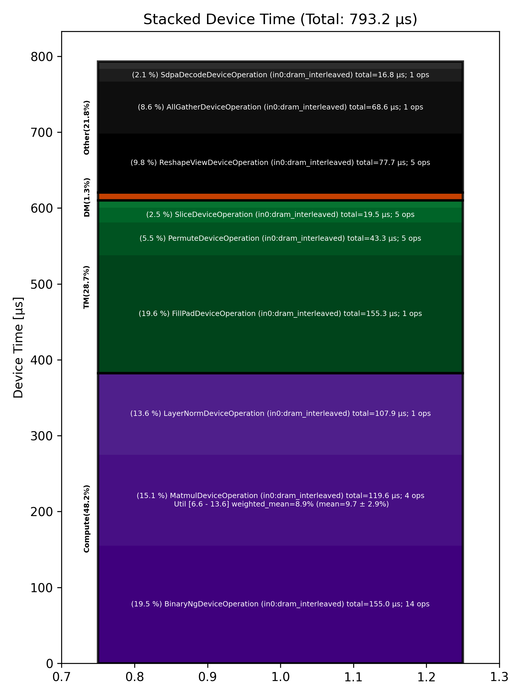

🚀 Performance Report 🚀 ======================== ID Total % Bound OP Code Device Device Time Op-to-Op Gap Cores DRAM DRAM % FLOPs FLOPs % Math Fidelity ------------------------------------------------------------------------------------------------------------------------------------------------------------------------- 17 1.8 % LayerNormDeviceOperation 4 108 μs 1 BF16, BF16 => BF16 51 0.7 % SLOW MatmulDeviceOperation 32 x 2880 x 512 7 43 μs 1 μs 16 39 GB/s 13.5 % 2.2 TFLOPs 6.6 % HiFi2 BF16 x BFP8 => BF16 70 0.2 % ReshapeViewDeviceOperation 3 12 μs 1 μs 72 BF16 => BF16 114 0.1 % SliceDeviceOperation 20 5 μs 1 μs 72 BF16 => BF16 139 0.3 % BinaryNgDeviceOperation 29 15 μs 1 μs 72 BF16, BF16 => BF16 172 0.1 % SliceDeviceOperation 30 5 μs 1 μs 72 BF16 => BF16 195 0.3 % BinaryNgDeviceOperation 25 16 μs 1 μs 72 BF16, BF16 => BF16 251 0.1 % BinaryNgDeviceOperation 17 6 μs 1 μs 72 BF16, BF16 => BF16 289 0.3 % BinaryNgDeviceOperation 8 16 μs 1 μs 72 BF16, BF16 => BF16 296 0.3 % BinaryNgDeviceOperation 1 16 μs 1 μs 72 BF16, BF16 => BF16 353 0.1 % BinaryNgDeviceOperation 8 6 μs 1 μs 72 BF16, BF16 => BF16 367 0.1 % ConcatDeviceOperation 6 7 μs 1 μs 72 BF16, BF16 => BF16 396 0.5 % SLOW MatmulDeviceOperation 32 x 2880 x 64 3 31 μs 1 μs 2 12 GB/s 4.1 % 0.4 TFLOPs 9.2 % HiFi2 BF16 x BFP8 => BF16 432 0.1 % ReshapeViewDeviceOperation 5 4 μs 1 μs 32 BF16 => BF16 466 0.1 % SliceDeviceOperation 20 3 μs 1 μs 16 BF16 => BF16 507 0.1 % PermuteDeviceOperation 17 6 μs 1 μs 16 BF16 => BF16 518 0.1 % BinaryNgDeviceOperation 3 5 μs 1 μs 72 BF16, BF16 => BF16 549 0.1 % SliceDeviceOperation 27 3 μs 1 μs 16 BF16 => BF16 591 1.7 % PermuteDeviceOperation 6 4 μs 99 μs 16 BF16 => BF16 614 4.2 % BinaryNgDeviceOperation 3 5 μs 246 μs 72 BF16, BF16 => BF16 656 4.4 % BinaryNgDeviceOperation 5 3 μs 258 μs 72 BF16, BF16 => BF16 679 4.5 % BinaryNgDeviceOperation 2 5 μs 261 μs 72 BF16, BF16 => BF16 729 1.7 % BinaryNgDeviceOperation 12 5 μs 99 μs 72 BF16, BF16 => BF16 761 3.5 % BinaryNgDeviceOperation 12 3 μs 204 μs 72 BF16, BF16 => BF16 800 4.0 % ConcatDeviceOperation 9 2 μs 237 μs 32 BF16, BF16 => BF16 805 4.5 % InterleavedToShardedDeviceOperation 27 1 μs 264 μs 16 BF16 => BF16 865 4.0 % PagedUpdateCacheDeviceOperation 8 4 μs 231 μs 16 BF16, BF16 => BF16 873 6.0 % SLOW MatmulDeviceOperation 32 x 2880 x 64 30 30 μs 328 μs 2 12 GB/s 4.3 % 0.4 TFLOPs 9.6 % HiFi2 BF16 x BFP8 => BF16 909 1.9 % ReshapeViewDeviceOperation 31 3 μs 112 μs 32 BF16 => BF16 930 2.7 % PermuteDeviceOperation 24 4 μs 159 μs 32 BF16 => BF16 967 1.8 % InterleavedToShardedDeviceOperation 2 1 μs 106 μs 16 BF16 => BF16 1017 2.5 % PagedUpdateCacheDeviceOperation 12 4 μs 147 μs 16 BF16, BF16 => BF16 1039 1.7 % PermuteDeviceOperation 6 8 μs 96 μs 72 BF16 => BF16 1058 4.0 % SdpaDecodeDeviceOperation 24 17 μs 219 μs 72 BF16, BF16 => BF16 1095 4.0 % PermuteDeviceOperation 2 22 μs 216 μs 72 BF16 => BF16 1125 4.1 % ReshapeViewDeviceOperation 27 14 μs 231 μs 16 BF16 => BF16 1159 5.5 % SLOW MatmulDeviceOperation 32 x 512 x 2880 10 15 μs 312 μs 45 113 GB/s 39.2 % 6.3 TFLOPs 13.6 % HiFi4 BF16 x BFP8 => BF16 1201 7.3 % AllGatherDeviceOperation 0 69 μs 364 μs 24 BF16 => BF16 1246 3.4 % FillPadDeviceOperation 11 155 μs 47 μs 8 BF16 => BF16 1264 2.6 % FastReduceNCDeviceOperation 5 10 μs 146 μs 72 BF16 => BF16 1287 1.3 % SliceDeviceOperation 2 3 μs 76 μs 72 BF16 => BF16 1339 3.6 % BinaryNgDeviceOperation 17 5 μs 208 μs 72 BF16, BF16 => BF16 1367 5.0 % ReshapeViewDeviceOperation 14 45 μs 252 μs 72 BF16 => BF16 1391 4.6 % BinaryNgDeviceOperation 6 50 μs 224 μs 72 BF16, BF16 => BF16 ------------------------------------------------------------------------------------------------------------------------------------------------------------------------- 100.0 % 44 device ops, 0 host ops, 0 signposts 793 μs 5,149 μs 📊 Stacked report 📊 ==================== Total % Op Code Device Time Sum Op Count Op Category Min FLOPs Max FLOPs Mean FLOPs Std FLOPs Weighted Mean FLOPs ----------------------------------------------------------------------------------------------------------------------------------------------------------------------------- 19.57 % FillPadDeviceOperation (in0:dram_interleaved) 155.25 μs 1 TM 19.54 % BinaryNgDeviceOperation (in0:dram_interleaved) 155.03 μs 14 Compute 15.08 % MatmulDeviceOperation (in0:dram_interleaved) 119.59 μs 4 Compute 6.62 % 13.61 % 9.75 % 2.89 % 8.90 % 13.60 % LayerNormDeviceOperation (in0:dram_interleaved) 107.91 μs 1 Compute 9.79 % ReshapeViewDeviceOperation (in0:dram_interleaved) 77.67 μs 5 Other 8.65 % AllGatherDeviceOperation (in0:dram_interleaved) 68.60 μs 1 Other 5.46 % PermuteDeviceOperation (in0:dram_interleaved) 43.34 μs 5 TM 2.46 % SliceDeviceOperation (in0:dram_interleaved) 19.49 μs 5 TM 2.12 % SdpaDecodeDeviceOperation (in0:dram_interleaved) 16.85 μs 1 Other 1.23 % FastReduceNCDeviceOperation (in0:dram_interleaved) 9.76 μs 1 Other 1.19 % ConcatDeviceOperation (in0:dram_interleaved) 9.43 μs 2 TM 1.04 % PagedUpdateCacheDeviceOperation (in0:dram_interleaved) 8.28 μs 2 DM 0.25 % InterleavedToShardedDeviceOperation (in0:dram_interleaved) 2.02 μs 2 DM -----------------------------------------------------------------------------------------------------------------------------------------------------------------------------
